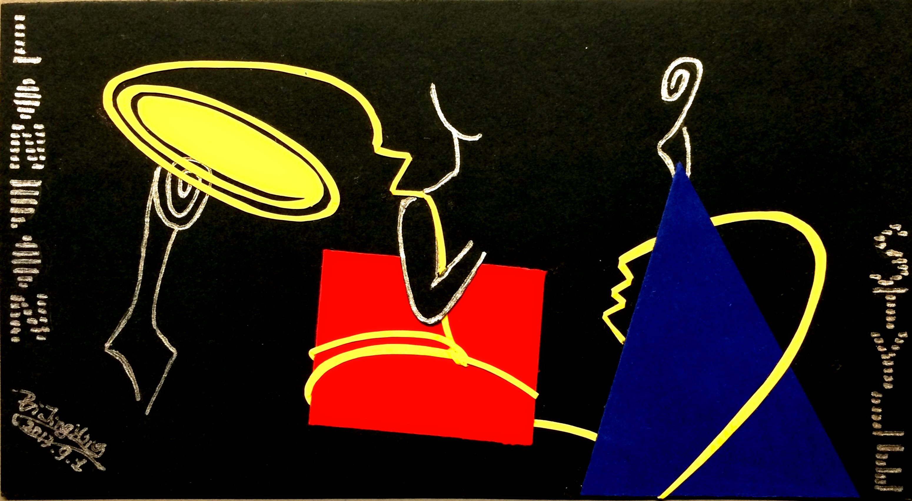

Jingying Jane Bi

jingying.jane.bi@gmail.com
https://www.linkedin.com/in/jingying-jane-bi
My research interest lies on quantitative investment, machine learning, natural language processing
and network economics.
I received Master’s degree from the University of Chicago. My Master’s thesis
News Diffusion Through Online Social Network
won the Data Science Awards on
Mind Bytes 2018 - Research Computing Expo and Symposium.
I enjoy painting, Chinese calligraphy, reading, yoga and sports. My paintings
Yolmo - Art of Basket Weaving
were distributed by Dr. Lauren Gawne to Yolmo villagers in Nepal.
We hope more people discover the beauty of Yolmo culture.
I am passionate about educational equity. I was a teaching volunteer in Nakhon-Pathom, Thailand, teaching English to over 600 students from Kindergarten to Grade 9, in 2014.
I am a member of
JumpStart in Chicago, IL, working on early education.
I also taught at Chicago public school
Kenwood Academy, in 2018.
Art & Painting
- Yolmo -- Art of Basket Weaving
These paintings come from my book illustration Yolmo -- Art of Basket Weaving.
It records the daily life of Yolmo villagers as well as how intelligent women there weave the nice baskets.
Art supervisor is Professor Joan Marie Kelly. Dr. Lauren Gawneprovides assistance in translation.
Full text is available here.
The book on Amazon is available here.
These works are of various materials, methods, and topics. Each of them covers a secret.
|
It Is A Windy Day
This is called cyanotype effect with cyan-blue print. It is a photographic printing process which could be traced back to 1840s.
STEP 1 Mix two chemicals, light-sensitive iron(III) complex with a readily oxidizable polybasic carboxylic acid,
usually citric acid or oxalic acid, and hexacyanoferrate(III).
STEP 2 Coated the cotton-paper with the solution made in STEP 1 and dry the paper.
STEP 3 Decorate the dried paper with old photographic film strip, petals etc. Then Expose it to sunlight.
STEP 4 Rinse the paper under running water to wash off the unexposed part.
|
|
Think Out Of Box
The idea came from a math tutorial question. First draft is at the lower left bottom.
|
|
L-E-E-L-A-W-A-D-E-E
I drew it on a napkin while sitting on a swing under the tree. My Thai father told me that the tree is called "L-E-E-L-A-W-A-D-E-E".
|

London_Style
The assignment topic is "Use the square, circle and triangle to design something". Inspiration came from three fashion icons in U.K. They are
Queen Elizabeth II (hat), Prime Ministers Thatcher (handbag), and Princess Kate (dress).
|
 Yolmo Basket Weaving II
Yolmo Basket Weaving II
 Yolmo Basket Weaving III
Yolmo Basket Weaving III
 Yolmo Basket Weaving IV
Yolmo Basket Weaving IV
{kind=link}
{kind=link}
{kind=link}
{kind=link}
{kind=link}
{kind=link}
{kind=link}
{kind=link}
{kind=link}